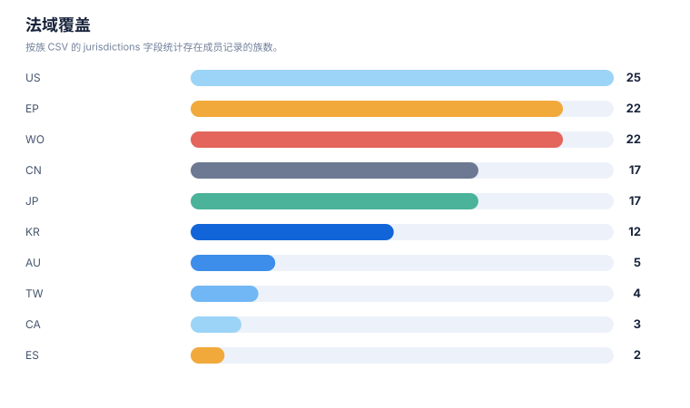

专利族地图报告
案例：tfr1_patent_case · 生成时间：2026-08-06T05:47:44.783064+00:00 · 本报告为研究资料，不构成法律意见。
研究范围
- 研究对象：Transferrin Receptor 1；别名：transferrin receptor 1, TfR1, CD71, TFRC, transferrin receptor protein 1
- 靶点/机制：TfR1
- 适应症：broad (cancer, iron metabolism, CNS delivery)
- 法域：目标法域 CN, US；关联扩展法域 WO, EP
- 截至日期：2026-08-06
- 深度：standard_analysis；报告语言：zh
- 来源目录：上游记录 143 条，去重 URL 140 个；目录不是已访问结果集。
- 申请人消歧：未提供；需从族记录反向归一化
1. 族口径
本报告按输入数据中的 family_id 统计，并保留 family_definition。若同时需要 DOCDB simple family 与 INPADOC extended family，应分别建字段和分别统计，不能混合去重。
2. 专利族总览
| 族 | 族定义 | 代表文献 | 最早优先权 | 申请人 | 法域 | claim 类别 | 状态快照 | 置信度 |
|---|---|---|---|---|---|---|---|---|
| TFR-FAM-023 | DOCDB/simple-family screen; transferrin ligand / TfR-targeted liposome-nanoparticle delivery (boundary) | US8821943B2 | 2006-09-12 | Board of Regents of the University of Texas System | US;WO;CN | composition;formulation;conjugate;method of treatment | US granted 2014-09-02 shown Active; official review required | medium |
| TFR-FAM-025 | DOCDB/simple-family screen; TfR/CD71 in diagnostics / CTC enrichment / imaging (boundary) | US11592396B2 | 2009-05-27 | Lumicell Inc | US;WO;EP | diagnostic;method;composition | US granted 2023-02-28 shown Active; official review required | medium |
| TFR-FAM-024 | DOCDB/simple-family screen; TfR1 in ferroptosis / iron-metabolism modulation (boundary) | US10597381B2 | 2012-04-02 | The Trustees of Columbia University in the City of New York | US;WO;EP;CN | composition;method of treatment;mechanism | US granted 2020-03-24 shown on public mirror; official review required | medium |
| TFR-FAM-002 | DOCDB/simple-family screen; safety branch for BBB transport (reticulocyte depletion mitigation) | JP6905966B2 | 2012-05-21 | Genentech Inc / Hoffmann-La Roche | JP;KR;US;WO | method of treatment;regimen;antibody | JP/KR granted shown on public mirror; CN/US status to verify | medium |
| TFR-FAM-001 | DOCDB/simple-family screen; anti-TfR1 antibody BBB/RMT platform (human+primate cross-reactive; low-affinity; effector-silenced; reticulocyte-sparing) | EP3594240B1 | 2013-05-20 | F. Hoffmann-La Roche AG / Genentech | EP;US;WO;CN;JP;KR;TW | composition;antibody;use;method of treatment;combination | EP granted 2023-12-06 and shown Active on public mirror (anticipated expiry 2034-05-20); CN/US official registers require review | medium |
| TFR-FAM-006 | DOCDB/simple-family screen; JCR single-chain anti-hTfR + CNS-protein fusion (enzyme replacement across BBB) | US9994641B2 | 2013-12-25 | JCR Pharmaceuticals Co Ltd | US;JP;EP;WO;CN;KR | composition;antibody;fusion protein;method of treatment;use | US granted 2018-06-12 Active (expires 2034-12-24); CN/EP status to verify | medium |
| TFR-FAM-003 | DOCDB/simple-family screen; bispecific anti-hapten/anti-BBBR shuttle platform | US11273223B2 | 2014-01-03 | Hoffmann-La Roche Inc / Roche Diagnostics GmbH | US;WO;EP;CN | composition;antibody;conjugate;method of treatment | US granted 2022-03-15 Active (expires 2035-02-16); CN/EP status to verify | medium |
| TFR-FAM-004 | DOCDB/simple-family screen; monovalent BBB shuttle modules | US20200071413A1 | 2014-01-06 | Hoffmann-La Roche Inc | US;WO;EP;CN | composition;antibody;use | US application shown published on public mirror; official status to verify | medium |
| TFR-FAM-010 | DOCDB/simple-family screen; Ossianix TfR1-selective shark VNAR single-domain antibodies | US11918647B2 | 2014-11-14 | Ossianix Inc | US;WO;EP;AU;CA;JP;KR | composition;antibody;conjugate;use;diagnostic | US granted 2024-03-05 Active (expires 2038-01-05); CN/EP status to verify | medium |
| TFR-FAM-016 | DOCDB/simple-family screen; CytomX anti-CD71 activatable antibodies | US20220306759A1 | 2015-05-04 | CytomX Therapeutics Inc | US;WO;EP;CN;JP;KR | composition;antibody;method of treatment;diagnostic | US application US20220306759A1 shown Abandoned on public mirror (2026-08-06); other members require official review | high (US application abandoned is shown on public page) |
| TFR-FAM-005 | DOCDB/simple-family screen; tailored-affinity anti-TfR antibodies | JP6975508B2 | 2015-06-24 | F. Hoffmann-La Roche AG | JP;TW;US;WO;EP;CN | composition;antibody;use | JP granted 2021-12-01 shown Active; CN/US status to verify | medium |
| TFR-FAM-007 | DOCDB/simple-family screen; JCR novel anti-human TfR antibodies / BBB (2015 cohort) | EP3315606B1 | 2015-06-24 | JCR Pharmaceuticals Co Ltd | JP;EP;US;WO;CN;TW;KR | composition;antibody;fusion protein;use | EP granted shown on public mirror; CN/US/JP status to verify | medium |
| TFR-FAM-019 | DOCDB/simple-family screen; Inatherys anti-TfR antibodies for proliferative/inflammatory disease | CA2992509C | 2015-07-22 | Inatherys | CA;US;WO;EP | composition;antibody;method of treatment | CA granted 2022-08-23 shown on public mirror; US/EP status to verify | medium |
| TFR-FAM-022 | DOCDB/simple-family screen; Regeneron TfR-mediated internalizing enzyme delivery | ES3045508T3 | 2015-12-08 | Regeneron Pharmaceuticals Inc | EP;ES;US | composition;fusion protein;method of treatment | EP/ES translation shown on public mirror; JP2023054256A (2018-02-07) member; official review required | medium |
| TFR-FAM-017 | DOCDB/simple-family screen; GenAhead Bio anti-CD71 antibody-drug conjugate | JP7536328B2 | 2016-06-20 | GenAhead Bio Inc | JP;EP;US;CN;WO | composition;conjugate;antibody;method of treatment | JP granted 2024-08-20 shown on public mirror; CN/US/EP status to verify | medium |
| TFR-FAM-012 | DOCDB/simple-family screen; Ossianix in vivo peptide selection method | ES3049809T3 | 2016-08-06 | Ossianix Inc | EP;ES;US;AU | process;method;peptide | EP/ES translation shown on public mirror; official review required | medium |
| TFR-FAM-008 | DOCDB/simple-family screen; JCR novel anti-human TfR antibodies (2016 cohort) | JP7588199B2 | 2016-12-26 | JCR Pharmaceuticals Co Ltd | JP;TW;EP;US;WO;CN | composition;antibody;use | JP granted 2024-11-27 shown on public mirror; official review required | medium |
| TFR-FAM-009 | DOCDB/simple-family screen; JCR anti-hTfR lyophilized formulation | US12178858B2 | 2016-12-28 | JCR Pharmaceuticals Co Ltd | US;JP;EP;CN;KR | formulation;composition | US granted 2025-01-14 shown Active; CN/EP status to verify | medium |
| TFR-FAM-021 | DOCDB/simple-family screen; Denali engineered TfR1-binding transport vehicles (brain delivery) | EP3583120B1 | 2017-02-17 | Denali Therapeutics Inc | EP;US;WO;CN;JP;KR;AU | composition;antibody;fusion protein;method of treatment;use | EP granted 2022-10-05 shown Active (expires 2038-02-15); US11732023B2 granted; CN national-phase to verify | high (EP grant/status on public page) |
| TFR-FAM-015 | DOCDB/simple-family screen; AbbVie anti-CD71 activatable ADC (Probody drug conjugate) | US20240115724A1 | 2017-10-14 | CytomX Therapeutics Inc (co-developed with AbbVie Inc; assignment events transfer AbbVie inventors to CytomX) | US;WO;EP;CN;JP;KR | composition;conjugate;antibody;method of treatment | US application US20240115724A1 shown Abandoned on public mirror (2026-08-06); US parent/granted and CN/EP members require official review | high (US application abandoned is shown on public page) |
| TFR-FAM-011 | DOCDB/simple-family screen; Ossianix TFR-selective binding peptides (newer) | US12297286B2 | 2017-11-02 | Ossianix Inc | US;WO;EP;AU;JP | composition;peptide;use | US granted 2025-06-10 shown Active; CN/EP status to verify | medium |
| TFR-FAM-013 | DOCDB/simple-family screen; Dyne muscle-targeting complexes (anti-TfR1 antibody-oligo conjugates) for muscle diseases | US11795234B2 | 2018-08-02 | Dyne Therapeutics Inc | US;WO;EP;CN;JP;KR;AU;CA | composition;conjugate;antibody;method of treatment;regimen;combination | US granted 2023-10-24 (11795234B2) and 2023-12-12 (11839660B2) Active (expires up to 2042-07-08); multiple US members; CN/EP national-phase status to verify | medium |
| TFR-FAM-020 | DOCDB/simple-family screen; Fred Hutchinson TfR-targeting peptides | JP7664158B2 | 2018-12-14 | Fred Hutchinson Cancer Center | JP;US;WO | composition;peptide;use;diagnostic | JP granted 2025-04-15 shown on public mirror; CN/US status to verify | medium |
| TFR-FAM-014 | DOCDB/simple-family screen; Avidity anti-transferrin receptor antibodies and antibody-oligonucleotide conjugates | JP7654757B2 | 2018-12-21 | Avidity Biosciences Inc | JP;US;WO;EP;CN;KR | composition;antibody;conjugate;method of treatment | JP granted 2025-07-30 shown on public mirror; CN/US/EP status to verify | medium |
| TFR-FAM-018 | DOCDB/simple-family screen; Sapreme Technologies CD71-targeting antibody-oligonucleotide conjugates | EP4015003B1 | 2018-12-21 | Sapreme Technologies B.V. | EP;US;WO;CN;JP;KR | composition;conjugate;antibody;formulation | EP granted 2023-05-10 shown Active (expires 2039-12-09); CN/US national-phase to verify | high (EP grant/status on public page) |
统计可视化
打开 FTO 风格统计总览 · 图表由当前案例 CSV/JSON 自动生成。
专利族技术主题分布

统计口径：按 family_id 统计，每族归入一个主技术阶段。
最早优先权年度分布

统计口径：按族级 earliest_priority 的年份统计。
法域覆盖

统计口径：按族 CSV 的 jurisdictions 字段统计存在成员记录的族数。
申请人/受让人分布

统计口径：按当前族 CSV 的 applicant_or_assignee 字段统计；未做集团级消歧。
3. 主题关联图
下图是“研究对象—筛选到的专利族—技术主题”关联图，不把不同 family_id 之间强行画成继承或同族关系。正式族关系应进一步补录 priority/continuity/member 边。
flowchart LR Q[研究对象/技术方案] Q --> F1["TFR-FAM-001 · 结构/组成与核心实体"] Q --> F2["TFR-FAM-002 · 结构/组成与核心实体"] Q --> F3["TFR-FAM-003 · 结构/组成与核心实体"] Q --> F4["TFR-FAM-004 · 结构/组成与核心实体"] Q --> F5["TFR-FAM-005 · 结构/组成与核心实体"] Q --> F6["TFR-FAM-006 · 结构/组成与核心实体"] Q --> F7["TFR-FAM-007 · 结构/组成与核心实体"] Q --> F8["TFR-FAM-008 · 结构/组成与核心实体"] Q --> F9["TFR-FAM-009 · 结构/组成与核心实体"] Q --> F10["TFR-FAM-010 · 结构/组成与核心实体"] Q --> F11["TFR-FAM-011 · 结构/组成与核心实体"] Q --> F12["TFR-FAM-012 · 治疗用途/联合/给药方案"] Q --> F13["TFR-FAM-013 · 结构/组成与核心实体"] Q --> F14["TFR-FAM-014 · 结构/组成与核心实体"] Q --> F15["TFR-FAM-015 · 结构/组成与核心实体"] Q --> F16["TFR-FAM-016 · 结构/组成与核心实体"] Q --> F17["TFR-FAM-017 · 结构/组成与核心实体"] Q --> F18["TFR-FAM-018 · 结构/组成与核心实体"] Q --> F19["TFR-FAM-019 · 结构/组成与核心实体"] Q --> F20["TFR-FAM-020 · 结构/组成与核心实体"] Q --> F21["TFR-FAM-021 · 结构/组成与核心实体"] Q --> F22["TFR-FAM-022 · 结构/组成与核心实体"] Q --> F23["TFR-FAM-023 · 结构/组成与核心实体"] Q --> F24["TFR-FAM-024 · 结构/组成与核心实体"] Q --> F25["TFR-FAM-025 · 结构/组成与核心实体"]
4. 优先权时间泳道数据
| 族 | 最早优先权 | 公开日 | 代表文献 | 后续关系/待补检 |
|---|---|---|---|---|
| TFR-FAM-001 | 2013-05-20 | 2023-12-06 | EP3594240B1 | 分案/继续申请/国家阶段需逐项核验 |
| TFR-FAM-002 | 2012-05-21 | 2021-07-07 | JP6905966B2 | 分案/继续申请/国家阶段需逐项核验 |
| TFR-FAM-003 | 2014-01-03 | 2022-03-15 | US11273223B2 | 分案/继续申请/国家阶段需逐项核验 |
| TFR-FAM-004 | 2014-01-06 | 2020-03-05 | US20200071413A1 | 分案/继续申请/国家阶段需逐项核验 |
| TFR-FAM-005 | 2015-06-24 | 2021-12-01 | JP6975508B2 | 分案/继续申请/国家阶段需逐项核验 |
| TFR-FAM-006 | 2013-12-25 | 2018-06-12 | US9994641B2 | 分案/继续申请/国家阶段需逐项核验 |
| TFR-FAM-007 | 2015-06-24 | 2021-06-09 | EP3315606B1 | 分案/继续申请/国家阶段需逐项核验 |
| TFR-FAM-008 | 2016-12-26 | 2024-11-27 | JP7588199B2 | 分案/继续申请/国家阶段需逐项核验 |
| TFR-FAM-009 | 2016-12-28 | 2025-01-14 | US12178858B2 | 分案/继续申请/国家阶段需逐项核验 |
| TFR-FAM-010 | 2014-11-14 | 2024-03-05 | US11918647B2 | 分案/继续申请/国家阶段需逐项核验 |
| TFR-FAM-011 | 2017-11-02 | 2025-06-10 | US12297286B2 | 分案/继续申请/国家阶段需逐项核验 |
| TFR-FAM-012 | 2016-08-06 | 2025-06-01 | ES3049809T3 | 分案/继续申请/国家阶段需逐项核验 |
| TFR-FAM-013 | 2018-08-02 | 2023-10-24 | US11795234B2 | 分案/继续申请/国家阶段需逐项核验 |
| TFR-FAM-014 | 2018-12-21 | 2025-07-30 | JP7654757B2 | 分案/继续申请/国家阶段需逐项核验 |
| TFR-FAM-015 | 2017-10-14 | 2024-04-11 | US20240115724A1 | 分案/继续申请/国家阶段需逐项核验 |
| TFR-FAM-016 | 2015-05-04 | 2022-09-29 | US20220306759A1 | 分案/继续申请/国家阶段需逐项核验 |
| TFR-FAM-017 | 2016-06-20 | 2024-08-20 | JP7536328B2 | 分案/继续申请/国家阶段需逐项核验 |
| TFR-FAM-018 | 2018-12-21 | 2023-12-06 | EP4015003B1 | 分案/继续申请/国家阶段需逐项核验 |
| TFR-FAM-019 | 2015-07-22 | 2022-08-23 | CA2992509C | 分案/继续申请/国家阶段需逐项核验 |
| TFR-FAM-020 | 2018-12-14 | 2025-04-15 | JP7664158B2 | 分案/继续申请/国家阶段需逐项核验 |
| TFR-FAM-021 | 2017-02-17 | 2023-08-16 | EP3583120B1 | 分案/继续申请/国家阶段需逐项核验 |
| TFR-FAM-022 | 2015-12-08 | 2025-05-15 | ES3045508T3 | 分案/继续申请/国家阶段需逐项核验 |
| TFR-FAM-023 | 2006-09-12 | 2014-09-02 | US8821943B2 | 分案/继续申请/国家阶段需逐项核验 |
| TFR-FAM-024 | 2012-04-02 | 2020-03-24 | US10597381B2 | 分案/继续申请/国家阶段需逐项核验 |
| TFR-FAM-025 | 2009-05-27 | 2023-02-28 | US11592396B2 | 分案/继续申请/国家阶段需逐项核验 |
5. 法域矩阵
| 族 | AU | CA | CN | EP | ES | JP | KR | TW | US | WO |
|---|---|---|---|---|---|---|---|---|---|---|
| TFR-FAM-001 | 未见成员记录 | 未见成员记录 | 有记录 | 有记录 | 未见成员记录 | 有记录 | 有记录 | 有记录 | 有记录 | 有记录 |
| TFR-FAM-002 | 未见成员记录 | 未见成员记录 | 未见成员记录 | 未见成员记录 | 未见成员记录 | 有记录 | 有记录 | 未见成员记录 | 有记录 | 有记录 |
| TFR-FAM-003 | 未见成员记录 | 未见成员记录 | 有记录 | 有记录 | 未见成员记录 | 未见成员记录 | 未见成员记录 | 未见成员记录 | 有记录 | 有记录 |
| TFR-FAM-004 | 未见成员记录 | 未见成员记录 | 有记录 | 有记录 | 未见成员记录 | 未见成员记录 | 未见成员记录 | 未见成员记录 | 有记录 | 有记录 |
| TFR-FAM-005 | 未见成员记录 | 未见成员记录 | 有记录 | 有记录 | 未见成员记录 | 有记录 | 未见成员记录 | 有记录 | 有记录 | 有记录 |
| TFR-FAM-006 | 未见成员记录 | 未见成员记录 | 有记录 | 有记录 | 未见成员记录 | 有记录 | 有记录 | 未见成员记录 | 有记录 | 有记录 |
| TFR-FAM-007 | 未见成员记录 | 未见成员记录 | 有记录 | 有记录 | 未见成员记录 | 有记录 | 有记录 | 有记录 | 有记录 | 有记录 |
| TFR-FAM-008 | 未见成员记录 | 未见成员记录 | 有记录 | 有记录 | 未见成员记录 | 有记录 | 未见成员记录 | 有记录 | 有记录 | 有记录 |
| TFR-FAM-009 | 未见成员记录 | 未见成员记录 | 有记录 | 有记录 | 未见成员记录 | 有记录 | 有记录 | 未见成员记录 | 有记录 | 未见成员记录 |
| TFR-FAM-010 | 有记录 | 有记录 | 未见成员记录 | 有记录 | 未见成员记录 | 有记录 | 有记录 | 未见成员记录 | 有记录 | 有记录 |
| TFR-FAM-011 | 有记录 | 未见成员记录 | 未见成员记录 | 有记录 | 未见成员记录 | 有记录 | 未见成员记录 | 未见成员记录 | 有记录 | 有记录 |
| TFR-FAM-012 | 有记录 | 未见成员记录 | 未见成员记录 | 有记录 | 有记录 | 未见成员记录 | 未见成员记录 | 未见成员记录 | 有记录 | 未见成员记录 |
| TFR-FAM-013 | 有记录 | 有记录 | 有记录 | 有记录 | 未见成员记录 | 有记录 | 有记录 | 未见成员记录 | 有记录 | 有记录 |
| TFR-FAM-014 | 未见成员记录 | 未见成员记录 | 有记录 | 有记录 | 未见成员记录 | 有记录 | 有记录 | 未见成员记录 | 有记录 | 有记录 |
| TFR-FAM-015 | 未见成员记录 | 未见成员记录 | 有记录 | 有记录 | 未见成员记录 | 有记录 | 有记录 | 未见成员记录 | 有记录 | 有记录 |
| TFR-FAM-016 | 未见成员记录 | 未见成员记录 | 有记录 | 有记录 | 未见成员记录 | 有记录 | 有记录 | 未见成员记录 | 有记录 | 有记录 |
| TFR-FAM-017 | 未见成员记录 | 未见成员记录 | 有记录 | 有记录 | 未见成员记录 | 有记录 | 未见成员记录 | 未见成员记录 | 有记录 | 有记录 |
| TFR-FAM-018 | 未见成员记录 | 未见成员记录 | 有记录 | 有记录 | 未见成员记录 | 有记录 | 有记录 | 未见成员记录 | 有记录 | 有记录 |
| TFR-FAM-019 | 未见成员记录 | 有记录 | 未见成员记录 | 有记录 | 未见成员记录 | 未见成员记录 | 未见成员记录 | 未见成员记录 | 有记录 | 有记录 |
| TFR-FAM-020 | 未见成员记录 | 未见成员记录 | 未见成员记录 | 未见成员记录 | 未见成员记录 | 有记录 | 未见成员记录 | 未见成员记录 | 有记录 | 有记录 |
| TFR-FAM-021 | 有记录 | 未见成员记录 | 有记录 | 有记录 | 未见成员记录 | 有记录 | 有记录 | 未见成员记录 | 有记录 | 有记录 |
| TFR-FAM-022 | 未见成员记录 | 未见成员记录 | 未见成员记录 | 有记录 | 有记录 | 未见成员记录 | 未见成员记录 | 未见成员记录 | 有记录 | 未见成员记录 |
| TFR-FAM-023 | 未见成员记录 | 未见成员记录 | 有记录 | 未见成员记录 | 未见成员记录 | 未见成员记录 | 未见成员记录 | 未见成员记录 | 有记录 | 有记录 |
| TFR-FAM-024 | 未见成员记录 | 未见成员记录 | 有记录 | 有记录 | 未见成员记录 | 未见成员记录 | 未见成员记录 | 未见成员记录 | 有记录 | 有记录 |
| TFR-FAM-025 | 未见成员记录 | 未见成员记录 | 未见成员记录 | 有记录 | 未见成员记录 | 未见成员记录 | 未见成员记录 | 未见成员记录 | 有记录 | 有记录 |
6. 地图解读与限制
- 族数反映当前数据集中的去重结果，不反映商业价值、市场份额或有效专利数量。
official_status是输入快照；没有目标法域官方来源时，必须进入状态复核队列。- 代表文献不能替代族内成员清单；国家阶段、分案和继续申请可能有不同 claim 范围。